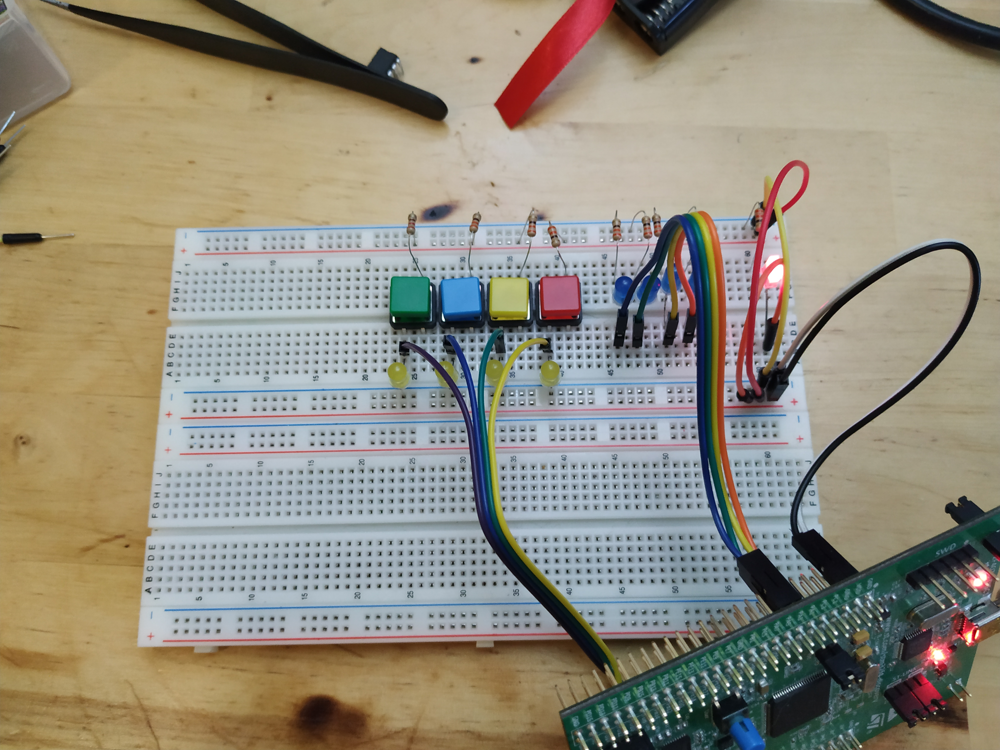
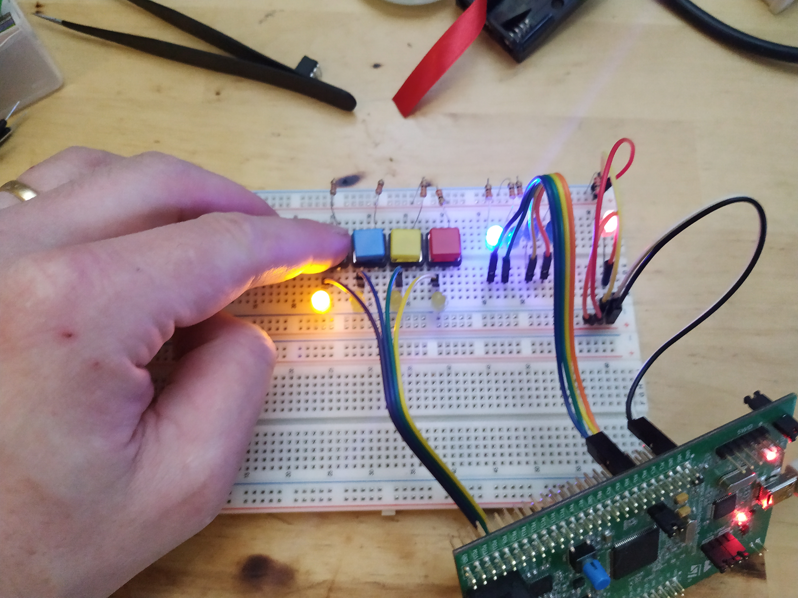

This text expands a little bit on the example in the previous post by connecting a set of buttons onto PD0 - PD3 to control the LEDs connected to PA0 - PA3.
The pictures below show how I have connected buttons and LEDs to my stm32f4-discovery board.
| LEDs and buttons 0 | LEDs and buttons 1 |
|---|---|
|  |  |
And here is a video showing the setup in action.
The buttons, when closed, pull the PDx pin high. The closing of the button also lights a yellow LED, just to see that everything is hooked up properly.
The code runs an infinite loop that, in every iteration, reads the PD pins and then copies their state to the corresponding PA pins where the blue LEDs are connected.
Much of the code today is indentical to the code written last time but there are additions of course.
let's take a look at the code labeled "main" piecewise.
main:
ldr r1, =0x40023830 @ AHB1ENR
ldr r0, [r1]
orr r0, 0x1 @ Turn on GPIO A
orr r0, 0x8 @ Turn on GPIO D
str r0, [r1]
This part loads the address of the AHB1ENR register into r1 then it loads the contents of the register into r0. A few bits are set to turn on GPIO A and D and then the value is written back to the AHB1ENR register. Details about this register can be found in the reference manual that I will link to at the bottom of this post.
ldr r1, =0x40020000 @ Pointer to PA MODER
ldr r0, [r1] @ Value of PA MODER
ldr r2, =0xFFFFFF00
and r0, r0, r2
orr r0, r0, 0x55 @ PA0 - PA3 output,
str r0, [r1] @ Write back PA MODER
As last time, PA0 - PA3 are set to outputs.
ldr r1, =0x40020C00 @ Pointer to PD MODER
ldr r0, [r1] @ Value of PD MODER
ldr r2, =0xFFFFFF00
and r0, r0, r2
str r0, [r1] @ Write back PC MODER
Here PD0 - PD3 is set to be inputs. This is done by clearing 8 bits in the PD MODER register located at address 0x40020C00.
ldr r1, =0x40020C0C @ Pointer to PD PUPDR
ldr r0, [r1] @ Value of PD PUPDR
ldr r2, =0xFFFFFF00
and r0, r0, r2
orr r0, r0, 0xAA @ PD 0 - PD 3 pull down
str r0, [r1] @ Write back PC PUPDR
The code above modifies the PD PUPDR register. PUPDR stands for PULL UP, PULL DOWN Register. This register is used to configure how the PD pins behave "electronically" and how to configure this will depend on what kind of electronics you have connected to the pin. In this case I have a button that when it is open means that the GPIO pin is connected to "nothing" but when the button is closed the GPIO pin is connected to +3V (via a resistor). When a pin is connected to "nothing" like that it is said to be "floating".
The code above, configures the PD0 - PD3 pins to be PULL DOWN pins. this means that internally in the "chip" some switches (transistors) will be configured in such a way that the pins are connected to ground via a large resistor. With this configuration the pin will never be in a floating state as it is either pulled to +3V by the button or pulled to ground internally in the chip.
The next thing that happens is that we enter into an infinite loop.
forever:
ldr r1, =0x40020C10 @ PD input data register
ldr r0, [r1]
and r0, r0, 0xF @ Only care about 4 LSB
ldr r2, =0x40020014 @ PA output data register
ldr r1, [r2] @ Load state of PA
ldr r3, =0xFFFFFF00
and r1, r1, r3 @ Clear PA0 - PA3
orr r1, r1, r0 @ Turn on leds corresponding to buttons
str r1, [r2]
b forever
This loop reads the PD input data register, looks at the 4 bits that corresponds to PD0 - PD3 and copies their state over to the PA output data register. There is some masking going on so that only the bits of interest are updated.
The complete assembly code listing is available below:
.syntax unified
.cpu cortex-m4
.thumb
.global vtable
.global reset_handler
.section .text
vtable:
.word _estack
.word reset_handler
.word 0
.word hard_fault_handler
.thumb_func
hard_fault_handler:
b hard_fault_handler
.thumb_func
reset_handler:
ldr r0, =_estack
mov sp, r0
ldr r0, =_dstart
ldr r1, =_dend
sub r2,r1,r0
cmp r2, #0
beq main
ldr r1, =_flash_dstart
cpy_loop:
ldrb r3, [r1]
strb r3, [r0]
add r1, r1, #1
add r0, r0, #1
sub r2, r2, #1
cmp r2, #0
bne cpy_loop
main:
ldr r1, =0x40023830 @ AHB1ENR
ldr r0, [r1]
orr r0, 0x1 @ Turn on GPIO A
orr r0, 0x8 @ Turn on GPIO D
str r0, [r1]
ldr r1, =0x40020000 @ Pointer to PA MODER
ldr r0, [r1] @ Value of PA MODER
ldr r2, =0xFFFFFF00
and r0, r0, r2
orr r0, r0, 0x55 @ PA0 - PA 3 output,
str r0, [r1] @ Write back PA MODER
ldr r1, =0x40020C00 @ Pointer to PD MODER
ldr r0, [r1] @ Value of PD MODER
ldr r2, =0xFFFFFF00
and r0, r0, r2
str r0, [r1] @ Write back PC MODER
ldr r1, =0x40020C0C @ Pointer to PD PUPDR
ldr r0, [r1] @ Value of PD PUPDR
ldr r2, =0xFFFFFF00
and r0, r0, r2
orr r0, r0, 0xAA @ PD 0 - PD 3 pull down
str r0, [r1] @ Write back PC PUPDR
forever:
ldr r1, =0x40020C10 @ PD input data register
ldr r0, [r1]
and r0, r0, 0xF @ Only care about 4 LSB
ldr r2, =0x40020014 @ PA output data register
ldr r1, [r2] @ Load state of PA
ldr r3, =0xFFFFFF00
and r1, r1, r3 @ Clear PA0 - PA3
orr r1, r1, r0 @ Turn on leds corresponding to buttons
str r1, [r2]
b forever
.section .data
Ah! that was another one about GPIO. Seems to work fine. This sets a good foundation for future exploration, I think. I want to take a few steps back now and take a look at the assembler, the directives, the instruction set and such things. The code written for session0, session1 and this current post is a bit ad-hoc, so going back and learning some of the basics sounds like a good idea. We can then revisit things like GPIO and maybe improve on the code by using more features of the assembly later.
As usual all feedback is very welcome. So do not hesitate to poke me about anything.
Oh I should add! The code for this sequence of posts is available at github.
Have a good day!
Please contact me with questions, suggestions or feedback at blog (dot) joel (dot) svensson (at) gmail (dot) com or join the google group .
© Copyright 2021 Bo Joel Svensson
This page was generated using Pandoc.